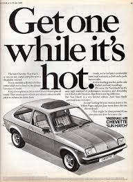
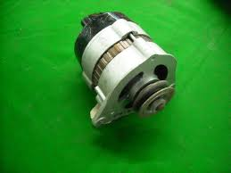

Why is this website so BASIC?!
This is my little hobby website. I am slowly withdrawing from social media sites in favour of something 'hand-rolled'. The following anecdote will hopefully explain why my site is a bit...how do you say it...shit...
My first car was a Vauxhall Chevette. It was green, with a sunroof, and smelled a bit damp inside.

One day, the alternator died, and so I had to get my hands dirty to replace it. I'm not a skilled mechanic; it's fair to say I'm below average, maybe even an un-skilled mechanic. So I talked it through with my Grandad (Jack) who knew about these things. He explained what I needed to do to get the alternator out of the engine. With the help of a sketch, on the back of an envelope, he described what I needed to do to take it apart and clean the bushes (or is it brushes?). He explained how to re-assemble and re-install. It all sounded a bit fiddly.
So I talked to my Dad, who immediately said... "You don't take alternators apart anymore, they are sealed units... take it out, and go and get a new one".
And that is what I did.
I finished the job, and reported back to Grandad. He obviously didn't want to criticise my early attempts at engineering, but he couldn't help observe that... "If you can't take it apart, how are you supposed to understand how it works?".
Which is why, in a roundabout kind of way, I decided to construct my little presence on the web as much by hand as I can. No WordPress.
